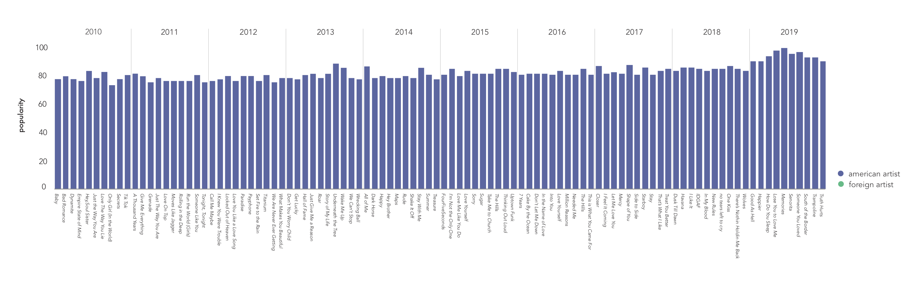
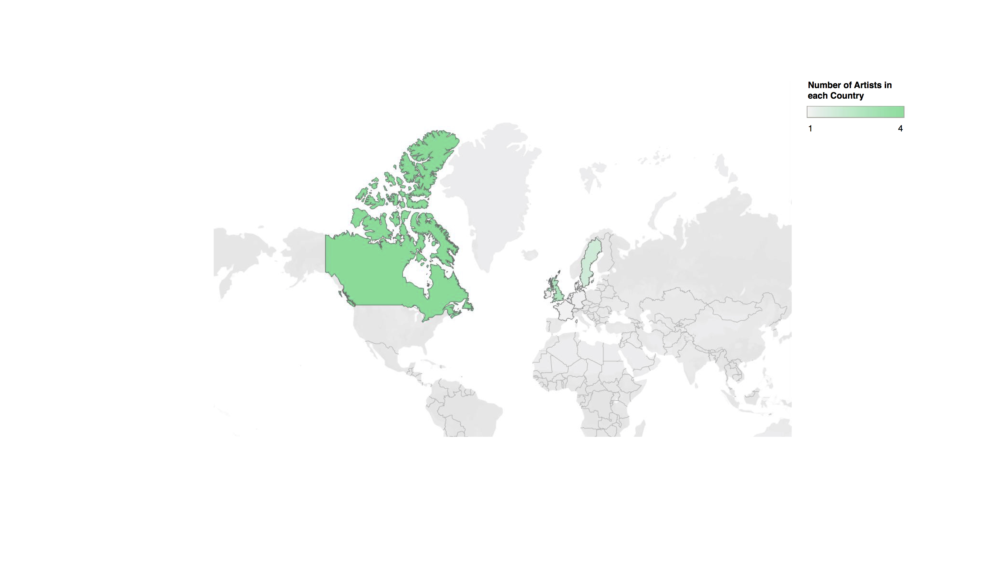
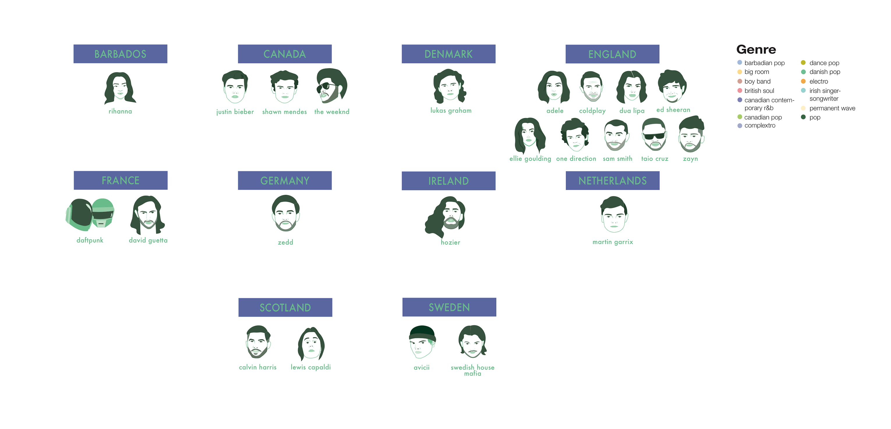
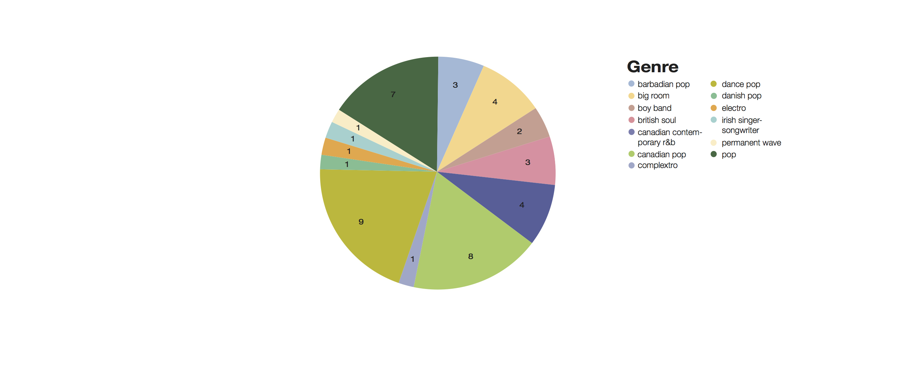
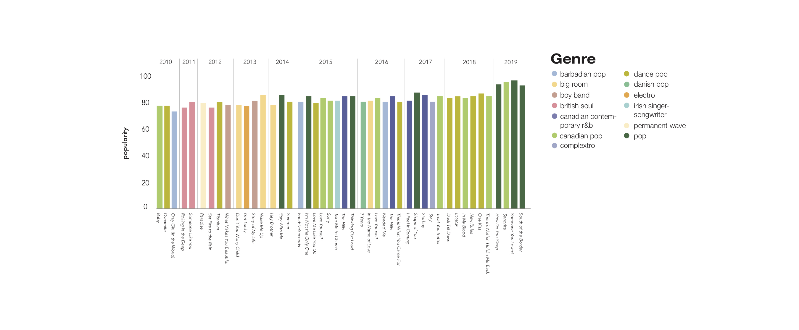
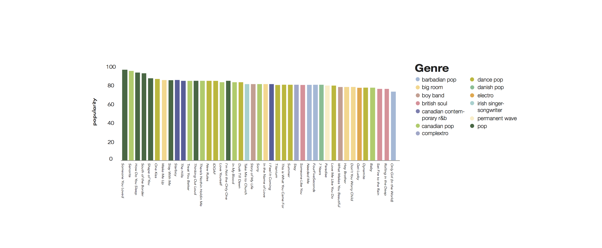

A BRIEF LOOK INTO HOW FOREIGN ARTISTS IN THE LAST DECADE HAVE BEGUN TO TAKE OVER THE MUSIC INDUSTRY
In 2019, almost half of the top ten most popular songs on Spotify were created by non American artists.
Previously, America has often dominated most of the entertainment industry with music being no exception. But now with our world becoming much more connected, there seems to be a shift. Through social media and other digital platforms, artists are now able to reach audiences they could never have even imagined of reaching. And for those listening, it’s never been easier to share what they're listening to.
Over the last decade there has been a significant rise in foreign artists appearing on the yearly list of most popular songs curated by Spotify. The graph below visualises the popularity of the top ten most popular songs on Spotify from the last decade. The shift in green represents those songs made by non American artists, highlighting the steady increase of foreign artists represented throughout the years. Foreign artists actually made up the majority of the songs featured in 2015 with 80% of the featured records being written by non Americans.

Popularity of top 10 most popular songs on Spotify per year from 2010 to 2019
The representation of non American artists globally is a phenomenon that has only recently begun, at least, considering how long music has been around for. Because it hasn't always been this way, there were certainly individuals who paved the way for the foreign artists that followed them. That could be from the music video to Justin Bieber’s single ‘Baby’ being the most disliked video at the time or when Rihanna released her debut single ‘Pon De Replay’ propelling her to international fame. Hover over the small green dots to see some of the moments when foreign artist’s have stood out!
Interactive line graph of top 10 most popular songs on Spotify with significant moments for Foreign Artist's highlighted with green dots
Of the 58 different artists featured on this list, 23 of them were not from America.

Map showing the nationality of the foreign artists featured
These artists come from all different parts of the world. Their origins range from as familiar to us as the pop artists of Canada to the DJ power houses of Sweden. It seems that the English artists have people swooning as they made up almost half of the foreign artists featured. The visualiser below showcases each of the artists featured on the list with the main genre their music falls under.

Nationality of the foreign artists featured and their music genre
Dance pop was the most frequent genre of the records featured with Canadian Pop and Pop following behind in order.

Genre of songs featured by foreign artists
The popularity of pop, and the genres branching from it, seems to have really kicked off in 2015. More than half of the foreign artist’s songs that year featured that year either fell under pop, dance pop or Canadian pop- the first time that had happened in recent history. Last year all of the songs by foreign artists fell under the pop category except for one which was classified as Canadian pop.
These pop songs featured in 2019 were also the most popular out of all the songs featured in the last decade.

The popularity and genre of foreign artist's songs by year

Genre of foreign artists songs featured arranged by most to least popular
However, there are still some things to consider-
Lack of female representation in the industry
Non-English songs weren't featured
Predominantly white music industry
Takeaways
As of now, these artists do largely come from the Western world. However, with artists from other parts of the world entering the global stage such as Korea’s super group BTS or latino stars Bad Bunny and J Balvin topping the charts, it’s only a matter of time till they’re featured at the end of year round up. There are still some biases in the music industry, but each of us can take small steps to make it a much more inclusive, free and above all creative space where we can all just enjoy the music.